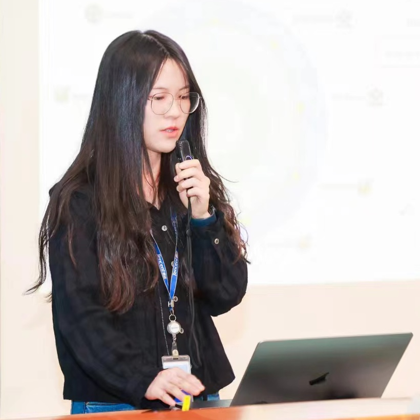

Yuying Ge 葛玉莹 yyge13@gmail.com yyge13@gmail.comGoogle Sholar Github Shenzhen, China |
 |
Biography
I am currently a Senior Researcher at Tencent ARC Lab, working on multimodal foundation models.
Before that, I was a reseacher at Tencent AI Lab.
In Aug 2023, I got my Ph.D. degree from the Department of Computer Science, The University of Hong Kong,
under the supervision of Prof. Ping Luo.
I was also a visiting student at UCSD, working with Prof. Xiaolong Wang.
We are actively looking for self-motivated interns to work on related research topics. Please feel free to reach out if you are interested.
News
- [12/2024] We release Divot, a diffusion-powered video tokenizer for unified comprehension and generation.
- [12/2024] We release DiCoDe for autoregressive video generation with LLMs.
- [12/2024] We release MoTo, Latent Motion Tokens for autoregressive video pretraining to enhance robot manipulation.
- [12/2024] We release EgoPlan-Bench2, evaluating planning capabilities of MLLMs across various real-world scenarios.
- [07/2024] We release SEED-Story for Multimodal Long Story Generation based on SEED-X.
- [04/2024] We release SEED-X, the latest in our SEED series, which unifies multi-granularity comprehension and generation.
- [02/2024] SEED-Bench is accepted by CVPR 2024.
- [01/2024] SEED-LLaMA is accepted by ICLR 2024.
- [12/2023] We release EgoPlan-Bench, which evaluates egocentric embodied planning of MLLMs.
- [11/2023] We release SEED-Bench-2, evaluating the hierarchical capabilities of MLLMs.
- [10/2023] We release an online gradio demo of SEED-LLaMA.
- [10/2023] We release the technical report of SEED-LLaMA, which is empowered by the improved SEED-2 tokenizer.
- [08/2023] We release SEED-Bench, the most comprehensive MLLM benchmark to date.
- [07/2023] We release our SEED. Stay tuned for more updates.
- [02/2023] Three papers were accepted by CVPR 2023.
- [07/2022] One paper was accepted by ECCV 2022.
- [03/2022] One paper was accepted by CVPR 2022 as oral.
- [11/2021] One paper was accepted by IEEE TIP.
- [03/2021] Two papers were accepted by CVPR 2021.
- [03/2019] One paper was accepted by CVPR 2019.
Selected Publications
( *equal contribution #corresponding author / project lead )-
Divot: Diffusion Powers Video Tokenizer for Comprehension and Generation
Yuying Ge, Yizhuo Li, Yixiao Ge, Ying Shan
arXiv preprint, 2024. [Paper] [Code]
-
DiCoDe: Diffusion-Compressed Deep Tokens for Autoregressive Video Generation with Language Models
Yizhuo Li, Yuying Ge#, Yixiao Ge, Ping Luo, Ying Shan
arXiv preprint, 2024. [Paper] [Project]
-
Moto: Latent Motion Token as the Bridging Language for Robot Manipulation
Yi Chen, Yuying Ge#, Yizhuo Li, Yixiao Ge, Mingyu Ding, Ying Shan, Xihui Liu
arXiv preprint, 2024. [Paper] [Code] [Project]
-
EgoPlan-Bench2: A Benchmark for Multimodal Large Language Model Planning in Real-World Scenarios
Lu Qiu, Yuying Ge#, Yi Chen, Yixiao Ge, Ying Shan, Xihui Liu
arXiv preprint, 2024. [Paper] [Code] [Project]
-
SEED-Story: Multimodal Long Story Generation with Large Language Model
Shuai Yang, Yuying Ge#, Yang Li, Yukang Chen, Yixiao Ge, Ying Shan, Yingcong Chen
arXiv preprint, 2024. [Paper] [Code]
-
EgoPlan-Bench: Benchmarking Multimodal Large Language Models for Human-Level Planning
Yi Chen, Yuying Ge#, Yixiao Ge, Mingyu Ding, Bohao Li, Rui Wang, Ruifeng Xu, Ying Shan, Xihui Liu
arXiv preprint, 2024. [Paper] [Code] [Project]
-
SEED-X: Multimodal Models with Unified Multi-granularity Comprehension and Generation
Yuying Ge*, Sijie Zhao*, Jinguo Zhu*, Yixiao Ge, Kun Yi, Lin Song, Chen Li, Xiaohan Ding, Ying Shan
arXiv preprint, 2024. [Paper] [Code] [Demo]
-
SEED-Bench: Benchmarking Multimodal Large Language Models
Bohao Li*, Yuying Ge*, Yixiao Ge, Guangzhi Wang, Rui Wang, Ruimao Zhang, Ying Shan
CVPR, 2024. [Paper] [Code] [Data] [Leaderboard]
-
Making LLaMA SEE and Draw with SEED Tokenizer
Yuying Ge*, Sijie Zhao*, Ziyun Zeng, Yixiao Ge, Chen Li, Xintao Wang, Ying Shan
ICLR, 2024. [Paper] [Code]
-
Planting a SEED of Vision in Large Language Model
Yuying Ge*, Yixiao Ge*, Ziyun Zeng, Xintao Wang, Ying Shan
Technical Report, 2023. [Paper] [Code]
-
Policy Adaptation from Foundation Model Feedback
Yuying Ge, Annabella Macaluso, Li Erran Li, Ping Luo, Xiaolong Wang
CVPR, 2023. [Paper] [Project] [Code]
-
Learning Transferable Spatiotemporal Representations from Natural Script Knowledge
Ziyun Zeng*, Yuying Ge*, Xihui Liu, Bin Chen, Ping Luo, Shu-Tao Xia, Yixiao Ge
CVPR, 2023. [Paper] [Code]
-
MILES: Visual BERT Pre-training with Injected Language Semantics for Video-text Retrieval
Yuying Ge, Yixiao Ge, Xihui Liu, Alex Jinpeng Wang, Jianping Wu, Ying Shan, Xiaohu Qie and Ping Luo
ECCV, 2022. [Paper] [Code]
-
Bridging Video-text Retrieval with Multiple Choice Questions
Yuying Ge, Yixiao Ge, Xihui Liu, Dian Li, Ying Shan, Xiaohu Qie and Ping Luo
CVPR, 2022 (oral). [Paper] [Project] [Code]
-
Parser-Free Virtual Try-on via Distilling Appearance Flows
Yuying Ge, Yibing Song, Ruimao Zhang, Chongjian Ge, Wei Liu, and Ping Luo
CVPR, 2021. [Paper] [Code]
-
DeepFashion2: A Versatile Benchmark for Detection, Pose Estimation, Segmentation and Re-Identification of Clothing Images
Yuying Ge, Ruimao Zhang, Xiaogang Wang, Xiaoou Tang, and Ping Luo
CVPR, 2019. [Paper] [Data]


Education
Ph.D., Department of Computer Science, The University of Hong Kong, 2019 - 2023
Bachelor, University of Electronic Science and Technology of China (UESTC) (ranking 1/525), 2014 - 2018
Experiences
Senior Researcher in Tencent ARC Lab, 2024 - Present
Senior Researcher in Tencent AI Lab, 2023 - 2024
Intern in Tencent ARC Lab, 2021 - 2022
Intern in Tencent AI Lab, 2020 - 2021
Research Assistant in Multimedia Lab (MMLab), The Chinese University of Hong Kong, 2018 - 2019
Intern in SenseTime Research, 2017 - 2018
Academic Activities
Reviewer for CVPR, ICLR, ICML, NeurIPS, ECCV, ICCV, TPAMI, TNNLS, TMM, TVCJ
Organizer of DeepFashion2 Challenge Clothes Landmark Detection
and Clothes Retrieval in 2019, 2020
Organizer of Third Workshop on Computer Vision for Fashion, Art and Design in CVPR, 2020
Organizer of Second Workshop on Computer Vision for Fashion, Art and Design in ICCV, 2019
© Yuying Ge | Last updated: Dec. 2021